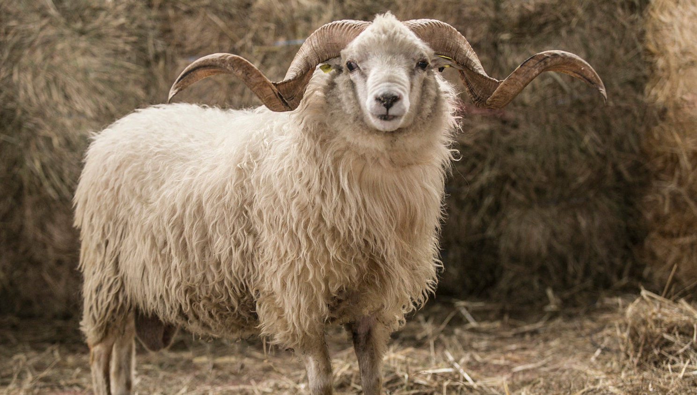

Nuestras Vacas
Trabajamos con dos razas de ganado vacuno: Holstein y Asturiana de los Valles
Holstein

Asturiana de los Valles
Nuestros Cerdos
Dos tipos de ganado porcino: gochu Asturcelta y cerdo Ibérico

Gochu Asturcelta

Cerdo Ibérico
Nuestras Gallinas
Especializados en dos tipos de ganado avícola: Leghorn y Pinta asturiana
Leghorn

Pinta Asturiana
Nuestras Ovejas
Dos tipos de ganado ovino: Merina y Xalda

Oveja Merina
